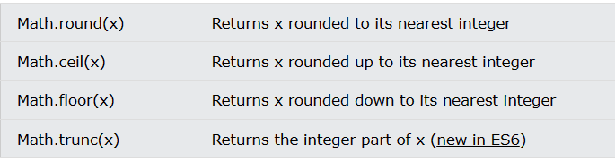

The JavaScript Math object allows you to perform mathematical tasks on numbers.
There are 4 common methods to round a number to an integer:
Math.round(x) returns the value of x rounded to its nearest integer:
Math.min() and Math.max() can be used to find the lowest or highest value in a list of arguments:
Math.random() returns a random number between 0 (inclusive), and 1 (exclusive):